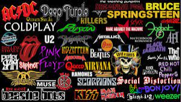
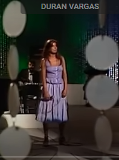
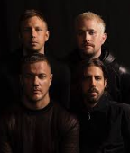

|  | |
| banda y artistas | exitos y historia |
|---|---|
|
micheal jackson conosido como el insuperable rey del pop una leyenda que bad bony y que nada machael jackson inbento muchos bailes mucha musica que debes de tener en tu plailist incluso aun que no sepas que sean de el (micheal jackson) suertudos la gente que pudo ir a unos de sus consiertos se siente envidia por ellos por que los consiertos eran una bellesas en todos los sentidos pero bueno bajo tiemes la historia, canal de youtube, y su cansion mas popular segun youtube,y una pruebita de calidad |
|  | janette fue una cantente ingles española que enamoro atoda una generacion (la generacion donde todo era muy buena musica 1970 a 2000) que sigue vigente en la actualidad con obras maestras como el muchacho de los ojos tristes y por que te vas |
|  | la banda de imagine dragons son los mas resientes representados en esta pajina wep es inposible que no los aigas escuchado una ves entu vida incluso por asidente y toda via siguen vijentes en dia de hoy (28/02/2024) |